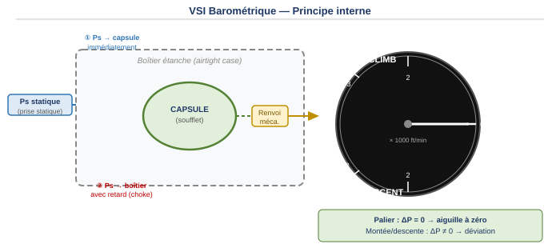
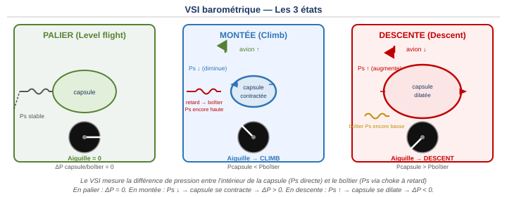
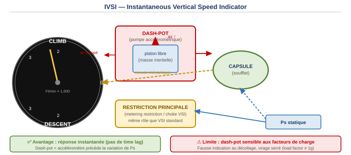
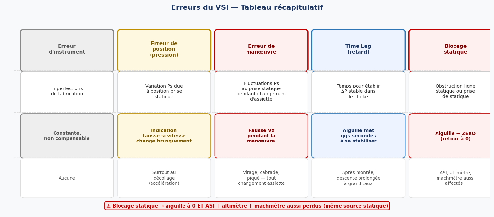

1. Introduction — Définition et unités
Le variomètre (VSI, Vertical Speed Indicator, parfois appelé Rate of Climb Indicator) indique au pilote la vitesse verticale Vz, c'est-à-dire le taux de variation d'altitude. Il mesure indirectement la vitesse de montée ou de descente en exploitant la variation de la pression statique Ps avec l'altitude.
Formellement, la vitesse verticale est la dérivée de l'altitude par rapport au temps, et elle est liée à la variation de pression statique :
Vz : vitesse verticale — Z : altitude — Ps : pression statique
Le VSI mesure le taux de variation de Ps pour en déduire Vz.
Unités : la vitesse verticale s'exprime en pieds par minute (ft/min) ou en mètres par seconde (m/s). La conversion à retenir :
2. Principe du VSI barométrique
2.1 Principe général
Le VSI barométrique utilise une capsule anéroïde placée dans un boîtier étanche. La pression statique est amenée à la fois à l'intérieur de la capsule (directement) et à l'intérieur du boîtier (par un passage calibré et étranglé appelé choke ou capillaire — littéralement « fuite calibrée »).

Le choke (capillaire) introduit intentionnellement un retard : la pression à l'intérieur du boîtier s'équilibre plus lentement que celle à l'intérieur de la capsule. C'est cette différence de pression qui actionne l'aiguille :

- Palier : Ps est stable → la pression dans la capsule et dans le boîtier finissent par s'égaliser (ΔP = 0) → aiguille à zéro.
- Montée : Ps diminue. La capsule réagit immédiatement (se contracte). Le boîtier, freiné par le choke, conserve momentanément une pression plus haute → la capsule est comprimée par le boîtier → aiguille vers CLIMB.
- Descente : Ps augmente. La capsule réagit immédiatement (se dilate). Le boîtier garde une pression plus basse → la capsule pousse sur le boîtier → aiguille vers DESCENT.
2.2 Compensation — Metering unit (capillaire + orifice)
La précision du VSI dépend des caractéristiques du choke, qui varient avec la densité, la température et la viscosité de l'air. Différentes méthodes de compensation ont été développées :
- Un choke composé uniquement d'un tube capillaire : la résistance au flux d'air est proportionnelle à la viscosité. L'erreur augmente avec l'altitude.
- Un choke composé uniquement d'un orifice : la différence de pression varie inversement à la température. L'erreur est de signe opposé au capillaire.
- En pratique, le choke standard (metering unit) combine deux tubes capillaires (céramique), dont les erreurs sont de signes opposés avec l'altitude et s'annulent mutuellement. Cette combinaison assure une bonne compensation sur une large plage d'altitudes et de températures.

3. IVSI — Variomètre instantané
Le VSI barométrique standard souffre d'un défaut important : le time lag (retard). Il faut quelques secondes pour que le différentiel de pression se stabilise après un changement de vitesse verticale. L'IVSI (Instantaneous Vertical Speed Indicator, variomètre instantané) est conçu pour éliminer ce retard.
3.1 Principe — le dash-pot
L'IVSI intègre un accéléromètre vertical appelé dash-pot (amortisseur à piston, ou palette). Cet organe détecte immédiatement toute accélération verticale et pompe de l'air dans le circuit de la capsule avant même que la variation de Ps ne soit perceptible. L'aiguille répond donc instantanément.

3.2 Limite critique de l'IVSI
Le dash-pot est un accéléromètre — il détecte toute accélération, pas seulement les accélérations verticales liées à la montée ou à la descente. Il est sensible aux facteurs de charge (load factors). Cela génère des indications erronées dans deux situations précises :
- Décollage (T/O) : l'accélération longitudinale de la course au décollage peut être interprétée comme une accélération verticale → l'IVSI indique une fausse montée alors que l'avion roule encore.
- Virages serrés : le facteur de charge (> 1 g) génère une accélération centripète → l'IVSI peut indiquer une fausse montée ou descente pendant un virage serré.
4. VSI inertiel (ADIRS)
Sur les avions de transport modernes, la vitesse verticale est calculée par l'ADIRS (Air Data Inertial Reference System — système de référence inertielle et de données air). L'ADIRS combine deux sources pour obtenir une vitesse verticale baro-inertielle (Vzi) plus précise :
- Vzbi : dérivation de l'altitude standard (altitude barométrique) — même principe que le VSI barométrique, mais calculé numériquement.
- Vzi : intégration des accélérations mesurées par les accéléromètres inertiels du système de référence inertielle (IRS) — mesure directe sans dépendance à Ps.
La fusion de ces deux sources donne une indication rapide (grâce à l'inertiel) et précise sur le long terme (grâce au baro). L'indication est affichée sur le PFD sous forme d'une bandelette verticale numérique (colonne droite du PFD Airbus).
5. Affichages
La vitesse verticale peut être affichée de plusieurs façons selon le type d'équipement :
- Cadran analogique circulaire : aiguille sur une graduation CLIMB (haut) / DESCENT (bas) / 0 (droite), gradué en milliers de ft/min. Format classique sur avions légers et certains avions de transport plus anciens.
- EFIS / PFD numérique : bandelette verticale analogique avec valeur numérique superposée, sur la droite du PFD. Utilisé sur tous les avions fly-by-wire modernes (Airbus A320/330/380, Boeing 737NG/787…).
- Écran multifonctions (G1000, Garmin…) : intégré dans l'affichage principal du PFD électronique.

6. Erreurs du VSI

6.1 Erreur d'instrument
Liée aux imperfections de fabrication (calibration du choke, friction mécanique). Constante et non compensable en vol — minimisée lors de la construction.
6.2 Erreur de position (ou de pression)
Si la prise de pression statique est affectée par une erreur de position (perturbation aérodynamique locale), une variation brusque de vitesse peut faire varier la pression statique mesurée indépendamment de tout changement d'altitude. Le VSI indique alors faussement une montée ou une descente. Ce phénomène est particulièrement notable lors de l'accélération au décollage.
6.3 Erreur de manœuvre
Tout changement d'assiette provoque des fluctuations de courte durée à la prise statique. Ces fluctuations sont interprétées comme des variations de Vz et l'instrument indique une fausse vitesse verticale pendant quelques secondes. De plus, la biellette de renvoi mécanique comprend souvent un petit contrepoids ; son inertie introduit un délai supplémentaire lors des manœuvres.
6.4 Time Lag (retard)
C'est l'erreur la plus caractéristique du VSI standard. L'aiguille met quelques secondes à se stabiliser au début d'une montée ou d'une descente (délai pour établir le ΔP à travers le choke). Il existe aussi un time lag au passage en palier : les pressions mettent du temps à s'égaliser, donc l'aiguille pointe encore en montée ou descente alors que l'avion vole à altitude constante. Cette erreur est amplifiée après une longue montée ou descente à grand taux.
6.5 Blocage de la ligne statique
Si la prise de pression statique est bouchée (givre, insecte, etc.), la pression dans le circuit ne varie plus. Le différentiel de pression se résorbe progressivement et l'aiguille revient à zéro — quelle que soit la vraie Vz. C'est un symptôme important car les autres instruments statiques (ASI, altimètre, machmètre) sont alimentés par la même prise et seront également affectés.
7. Utilisation du VSI — Calcul de la pente
Le VSI est utilisé pour calculer et contrôler la pente de descente lors d'une approche. La relation entre le taux de descente (ROD, Rate of Descent), la vitesse sol et la pente est fondamentale en navigation et en procédures d'approche.
Vp = vitesse sol (Ground Speed) en nœuds
Avec Pente en degrés : ROD = (Pente° × 100 × Vp) / 60
Ex : pente ILS = 3° → 3/0,6 = 5% | À 150 kt : ROD = 150 × 5 = 750 ft/min